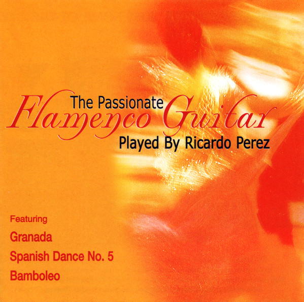

CD
The Passionate Flamenco Guitar
Ricardo Perez
Media: VG+ · Sleeve: VG+
CA$8.00
Discogs Suggested—
Discogs Median—
Discogs High—
- Physical Copy ID
- BB-CD-2316
- Year
- 2001
- Label
- A Play Collection
- Catalog #
- 10484-2
- Country
- ESSpain
- Genre / Style
- Folk, World, & Country · Flamenco